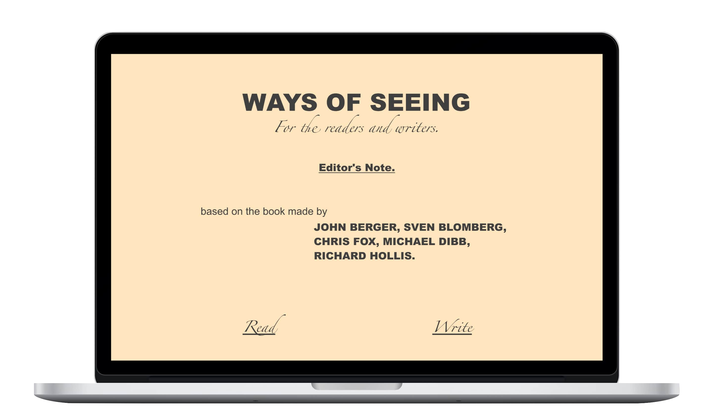
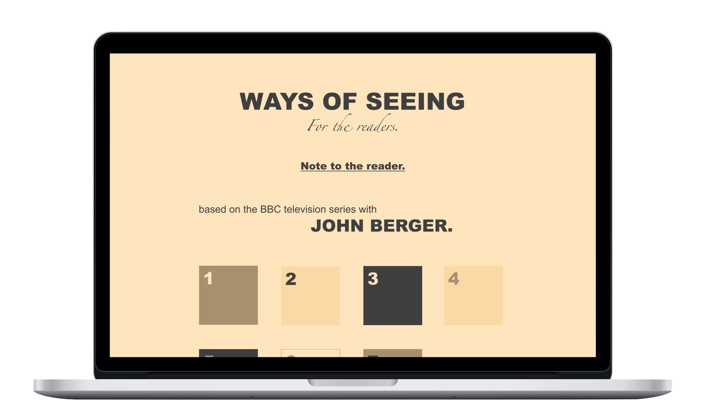
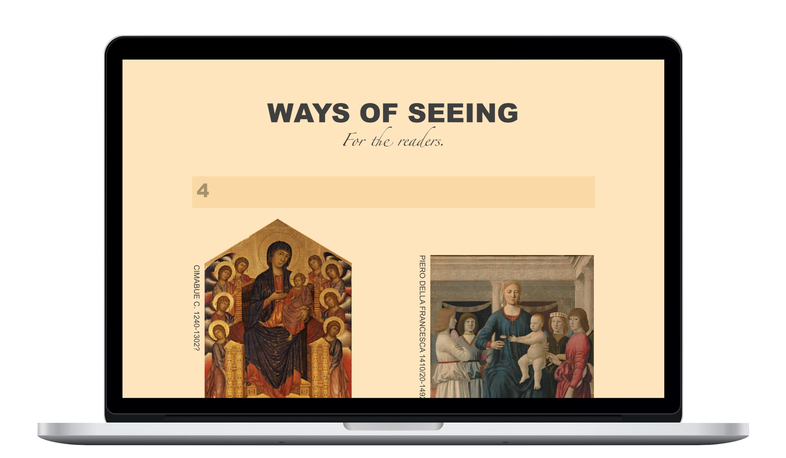

As someone who enjoys the art of visual story telling, a moment of gratitude for the late John Berger seems apropos. John Berger wrote Ways of Seeing: a 1972 television series that was intended as a response to Kenneth Clark’s Civilisation (a traditional perspective), and a book that consists of seven numbered essays: four using words and images and three using only images. Both the series and book criticize traditional western cultural aesthetics by raising questions about hidden principles in visual images. Besides the actual content of Berger’s work, Ways of Seeing offers something of great quality: an unprecedented manner of writing. “Sometimes in the pictorial essays no information at all is given about the images reproduced because it seemed to us that such information might distract from the points being made” - Ways of Seeing, Note to Reader. With citations, not only in-text but, in-body and arguements made with images alone, Berger's methods are clear, tangents are germane, and references are given more value than if they were placed in a footnote. For those unmatched idiosycracies, I am working on a digital publication of Ways of Seeing , where Berger's writing can be appreciated, and his methods could be implemented.
  
↑ As an example for the writing section, I used an exisitng article to illustrate the process of writing like John Berger: "The Value of Good Design at MoMA." by Dexigner. https://www.dexigner.com/news/31888.